先備：突變的範圍與染色體的構造
- 4-3 說：DNA 的鹼基順序決定蛋白質。那如果 DNA 改變了呢？這就是突變。
- 廣義的突變分兩個尺度：
- 大尺度：染色體的構造或數目改變（第2–5節）。
- 小尺度：基因本身的鹼基改變（第6節）。
- 要看懂染色體變異，先認識染色體：
- 細胞間期：遺傳物質是分散的細絲，叫染色質。
- 分裂期：染色質聚集成短棒狀的染色體，靠著絲點接上紡錘絲（由微管組成）被拉開。
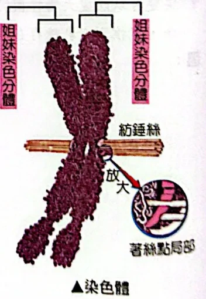
分裂期的染色體：已複製的兩條姐妹染色分體，由著絲點與紡錘絲相連原講義PDF第22頁・印刷第130頁・點圖放大
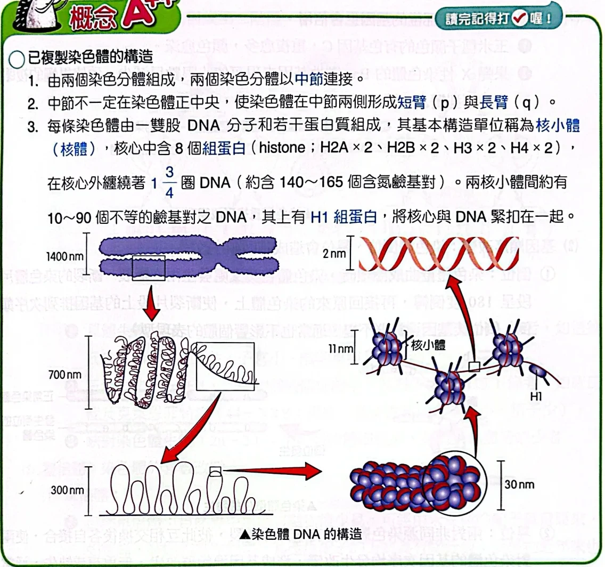
染色體 DNA 的包裝：DNA 纏繞組蛋白成為核小體（11 nm），再層層摺疊成 30、300、700 nm，最後成為 1400 nm 寬的染色體原講義PDF第23頁・印刷第131頁・點圖放大
染色體構造變異（一）：缺失與重複
- 原因：高能輻射線、化學物質、病毒等使染色體斷裂再接錯。
- 缺失、重複使基因數目改變。減數分裂時同源染色體要一對一配對，多出來的那一段無處可配，就拱成圈環，可在顯微鏡下看到。
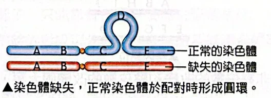
缺失：少了 D 片段；減數分裂配對時，正常染色體多出的 D 會拱成圈環原講義PDF第23頁・印刷第131頁・點圖放大
- 缺失例子：
- 第5號染色體短臂缺失 → 貓叫症：兩眼間距大、智力發展遲緩、耳朵變形、喉頭及聲帶發育不全，嬰兒哭聲像貓叫。
- 第11號染色體缺失 → 智能障礙、腎臟癌，有的甚至眼睛無虹膜。
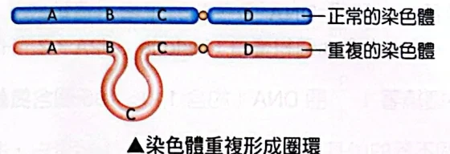
重複：C 片段出現兩次，配對時多出的那段拱成圈環原講義PDF第24頁・印刷第132頁・點圖放大
- 重複例子：
- 玉米種子的有色基因 C 重複愈多次，顏色愈深（基因多 → 產物多）。
- 果蠅 X 染色體上的 Bar 片段重複，使複眼的小眼數目減少，複眼由橢圓形變成狹縫形（棒眼）。
染色體構造變異（二）：倒位與易位
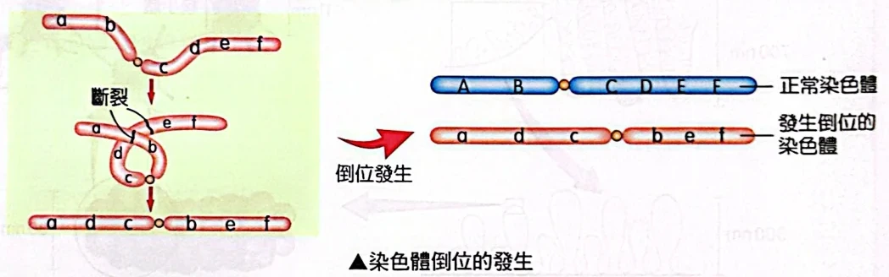
倒位：染色體繞成圈，交叉處斷兩次，中間片段倒轉 180° 再接回：abcdef → adcbef原講義PDF第24頁・印刷第132頁・點圖放大
- 倒位：染色體捲成圈時，在交叉處斷兩次，中間片段倒轉 180° 再接回。基因順序顛倒，但都還在同一條染色體上 → 連鎖群不變；基因沒有多也沒有少 → 通常不影響表現型。
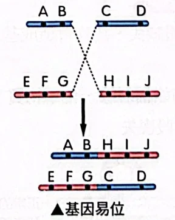
易位：兩條非同源染色體互換片段：AB‧CD＋EFG‧HIJ → ABHIJ＋EFGCD原講義PDF第24頁・印刷第132頁・點圖放大
- 易位：兩條非同源染色體各斷一段，互相交換後接上。原本連鎖的基因被分到別條染色體 → 連鎖群改變；沒有重複或缺失 → 通常也不影響表現型。
染色體數目變異：非整倍體
- 數目變異分兩大類：
- 非整倍體：一套中只有 1 條或數條改變。
- 整倍體：整套整套地改變（下一節）。
- 非整倍體的成因：減數分裂時同源染色體（第一階段）或姐妹染色分體（第二階段）沒有分開，叫無分離。第21號和性染色體較常發生。
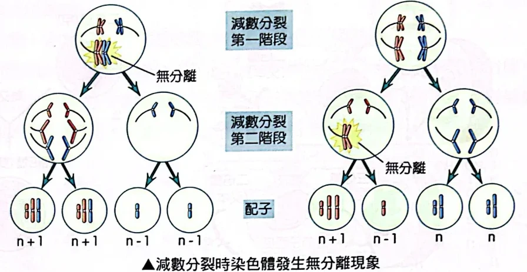
減數分裂的無分離：左為第一階段無分離（配子全部異常），右為第二階段無分離（一半配子異常）原講義PDF第25頁・印刷第133頁・點圖放大
染色體數目變異：整倍體
- 奇數倍的多倍體（如 3n）：減數分裂時每種染色體有3條，無法兩兩配對 → 配子不易存活 → 不結種子，只能靠營養器官繁殖。
- 同源多倍體：染色體都來自同一物種。例：三倍體無子西瓜。
- 異源多倍體：來自不同物種。例：自然培育的雙二倍體（2n＋2n）新世界棉，由舊世界棉和美洲棉雜交而來，26 對染色體中 13 對來自舊世界棉、13 對來自美洲棉。
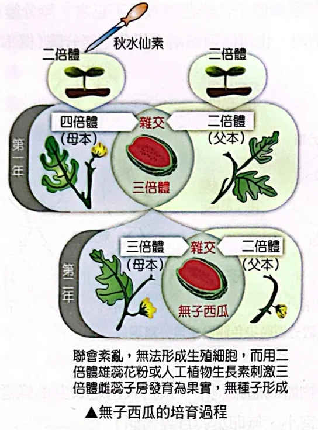
無子西瓜：秋水仙素使二倍體變四倍體；四倍體（母）×二倍體 → 三倍體；三倍體聯會紊亂，以花粉刺激子房發育成無種子的果實原講義PDF第26頁・印刷第134頁・點圖放大
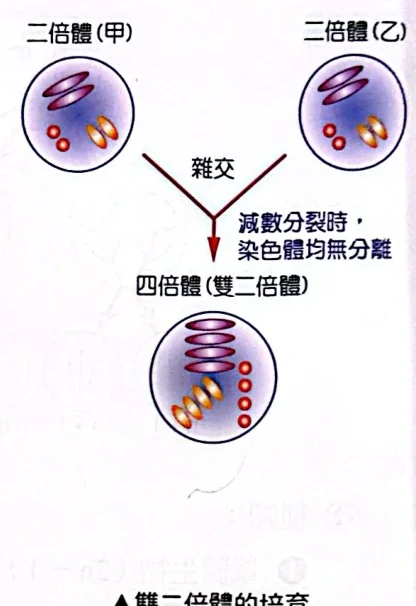
雙二倍體：兩種二倍體雜交，減數分裂時染色體全部無分離，得到含雙方各兩套的四倍體原講義PDF第26頁・印刷第134頁・點圖放大
基因突變：點突變的四種結果
- 基因突變：DNA 的鹼基對被取代、插入或刪除。對蛋白質來說，插入或刪除通常比取代嚴重（原因見下面的框移）。
- 點突變：一個基因內只有單一核苷酸對改變。用 4-3 的密碼表就能推出結果：
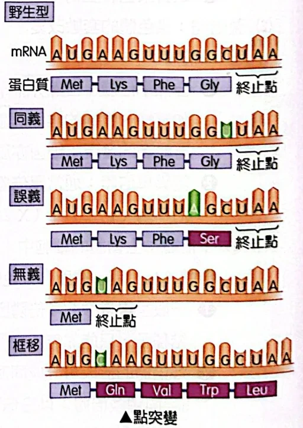
點突變：同義（Gly 不變）、誤義（Gly→Ser）、無義（Lys 處變終止）、框移（插入1個鹼基，後面全錯）原講義PDF第26頁・印刷第134頁・點圖放大
- 真實例子：鐮形血球貧血症是血紅素 β 次單元基因的誤義突變，第6個胺基酸由麩胺酸（Glu）變成纈胺酸（Val），密碼子 GAG → GUG。
引起突變的因子
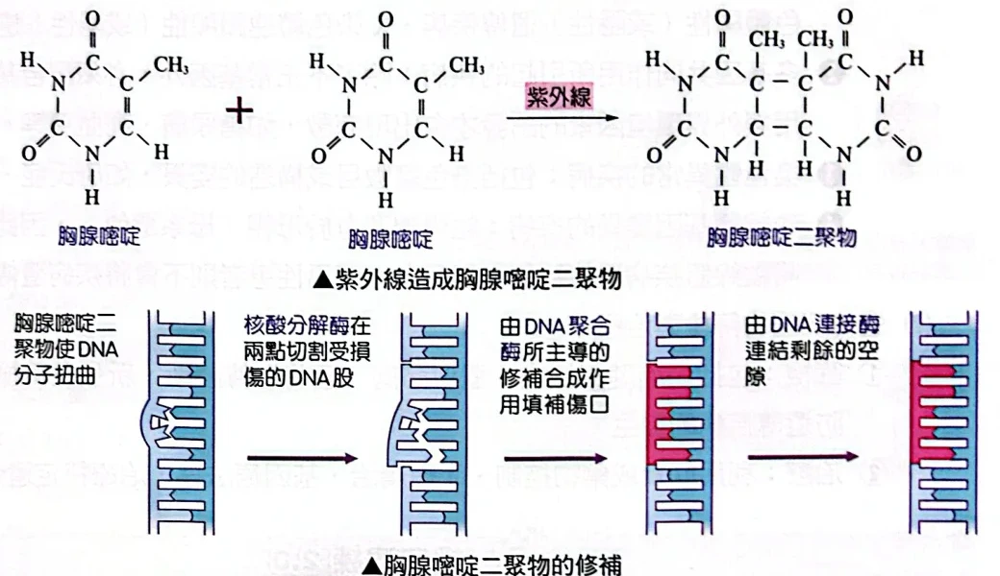
紫外線使相鄰兩個胸腺嘧啶接成二聚物 → 細胞用切除型修補：切掉、補上、接好原講義PDF第27頁・印刷第135頁・點圖放大
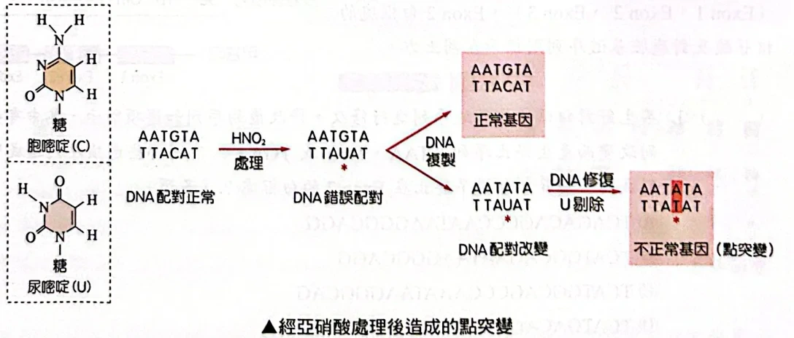
亞硝酸使胞嘧啶（C）脫去胺基變成尿嘧啶（U），複製後原本的 G–C 對變成 A–T 對原講義PDF第27頁・印刷第135頁・點圖放大
- 胸腺嘧啶二聚物會讓 DNA 扭曲，細胞用切除型修補：核酸分解酶切掉受損段 → DNA 聚合酶補上 → DNA 連接酶接好（和 4-2 複製用的是同一群酵素）。
- 大部分基因突變對個體有害甚至致死，偶爾有利；好壞要看生活環境。
- 突變提供演化的原料，但不能決定演化方向，決定方向的是天擇。
遺傳疾病的篩檢與治療
- 篩檢（預防）：婚前健康檢查、遺傳諮詢、產前遺傳診斷、新生兒篩檢。
- 治療：飲食或藥物控制、手術矯治、基因療法。
經典演練：外顯子題組 1–3
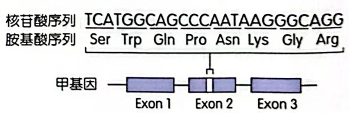
演練1–3附圖：甲基因有三個外顯子；Exon 2 白框處的核苷酸序列與胺基酸序列原講義PDF第28頁・印刷第136頁・點圖放大
某生針對白框的核苷酸序列進行修改，修改後的序列如選項所示，其中有些基因序列改變而產生終止序列（TAA、TAG 或 TGA）。下列哪些選項序列造成甲基因所形成的蛋白質，會提早終止在 Exon 2 的白框處？（多選）
(A) TCAGACAGCCCAATAAGGGCAGG
(B) TCATGGCAGAATAAGGGCAGG
(C) TCATGGCAGCCCAAATAAGGGCAG
(D) TCATGACAGCCCAATAAGGGCAGG
(E) TCATGGTAGCCCAATAAGGGCAGG
看答案與詳解收起
答CDE。
解讀框由 TCA（Ser）開始，每3個一組，找有沒有 TAA、TAG、TGA：
| 選項 | 分組 | 終止？ |
|---|
| 原序列 | TCA TGG CAG CCC AAT AAG GGC AGG | 無 |
| (A) | TCA GAC AGC CCA ATA AGG GCA GG | 無 |
| (B) | TCA TGG CAG AAT AAG GGC AGG（少了 CCC，3個一起刪，不框移） | 無 |
| (C) | TCA TGG CAG CCC AAA TAA …（插入一個 A，框移） | TAA ✓ |
| (D) | TCA TGA CAG …（TGG→TGA，無義突變） | TGA ✓ |
| (E) | TCA TGG TAG …（CAG→TAG，無義突變） | TAG ✓ |
注意：(A) 的序列中雖有「TAA」字樣（ATA│AGG 交界），但不在讀框上，不算終止。
小結找終止要對準讀框；插入1個會框移，刪3個只少一個胺基酸。
關於上述提早終止特性的甲基因，下列敘述哪些正確？（多選）
(A) 甲基因所在的基因體仍可進行 DNA 半保留複製 (B) 甲基因仍可進行轉錄作用 (C) 所表現的蛋白質仍可執行 Exon 3 所負責之功能 (D) Exon 1 仍可完整轉譯為正確的多肽鏈 (E) 若移至細菌中，就不會發生轉譯提前終止現象
看答案與詳解收起
答ABD。
解- (A) 對：複製只看鹼基配對，序列改了照樣能複製。
- (B) 對：轉錄靠啟動子；改動在 Exon 2 中間，不影響轉錄，只是 mRNA 也帶著終止密碼子。
- (C) 錯：轉譯在 Exon 2 就停了，Exon 3 的部分根本沒做出來。
- (D) 對：Exon 1 在終止點之前，序列沒變 → 照常正確轉譯。
- (E) 錯：遺傳密碼有普遍性，細菌也把 TAA/TAG/TGA（mRNA 的 UAA/UAG/UGA）當終止。另外細菌不會剪接內含子，問題只會更多。
小結終止密碼子只影響轉譯「之後」的部分；複製、轉錄照常。
由於基因中一個鹼基對發生替換，而導致右圖過程合成的肽鏈中第 8 位胺基酸由異亮胺酸（密碼子有 AUU、AUC、AUA）變成蘇胺酸（密碼子有 ACU、ACC、ACA、ACG），試述該基因的這個鹼基對如何替換？
看答案與詳解收起
答mRNA 密碼子的第2個鹼基由 U 變成 C；所以基因中這個位置的鹼基對由 T–A（編碼股 T、模版股 A）變成 C–G（編碼股 C、模版股 G）。
解- 比較兩組密碼子：AUU→ACU、AUC→ACC、AUA→ACA，只要第2個鹼基 U→C 就能從 Ile 變 Thr，符合「一個鹼基對替換」。（其他位置改一個都變不成 Thr。）
- mRNA 和編碼股相同（U↔T）：編碼股該位置 T→C。
- mRNA 和模版股互補：模版股該位置 A→G。
- 所以這個鹼基對由 A–T 變成 G–C（以模版股表示），是一個誤義突變。
小結先比密碼子找哪一位變，再換回 DNA：mRNA 同編碼股、補模版股。
經典演練：非侵入式產前檢驗 4–7
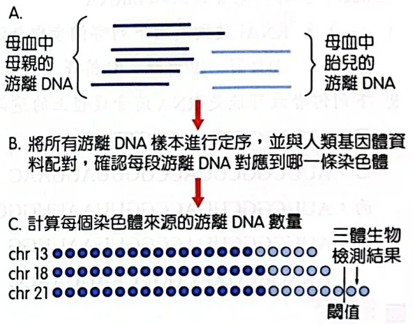
演練4–7附圖：非侵入式產前檢驗：母血游離 DNA 定序 → 比對染色體 → 計數，第21號超過閾值即提示三體原講義PDF第29頁・印刷第137頁・點圖放大
唐氏症屬於下列何種突變？
(A) 點突變 (B) 基因重複 (C) 三體 (D) 三倍體
看答案與詳解收起
答C。
解- 唐氏症：第21號染色體有3條（2n＋1），其他染色體正常 → 非整倍體中的三體。
- (D) 三倍體是每一套都變3套（3n），人類無法存活。
- (A)(B) 是基因層次或片段的變異，不是整條染色體多一條。
小結多一「條」＝三體（2n＋1）；多一「套」＝三倍體（3n）。
如果某孕婦在母血檢驗後得知有 1/6 機會生下唐寶寶，並進行胎兒核型檢驗，得到結果如右圖，根據該圖可確定下列敘述何者正確？
(A) 這是個正常男孩 (B) 這是個唐氏症女孩 (C) 這是個患有貓叫症的男孩 (D) 這是個透納氏症的男孩
看答案與詳解收起
答A。
解- 逐對數：1～22 號每號都是2條，第21號也只有2條 → 不是唐氏症。
- 性染色體：X 一條、Y 一條 → 男性（有 Y）。
- (B) 錯：21號沒有3條，且有 Y 是男生。(C) 貓叫症是第5號短臂缺失，圖中5號兩條外形相同，看不出缺失。(D) 透納氏症是 44＋X（只有一條 X、沒有 Y），而且一定是女性。
- 結論：核型正常的男孩。母血檢驗的 1/6 只是「機率」，核型檢查才是確診。
小結讀核型：先數21號、再看性染色體；有 Y 就是男。
根據文中所提的非侵入式產前檢查，檢驗方法之一的 MPSS 為什麼可以判斷個別 cfDNA 屬於哪一個染色體，這樣的檢驗能力應該歸功於哪一事件的完成？
看答案與詳解收起
答因為人類每條染色體的 DNA 序列都已經被解讀出來，把 cfDNA 片段定序後和這份資料比對，就知道它來自哪條染色體；這要歸功於「人類基因體計畫」的完成。
解- MPSS 只是把大量短片段定出序列；要知道「這段序列在哪條染色體上」，必須有一份人類全部染色體的標準序列可以比對。
- 題幹說「搭配人體基因解碼資料」→ 這份資料就是人類基因體計畫（2003年完成，解讀人類約 30 億個鹼基對）的成果。
- 一段夠長的序列在基因體中通常只出現在一個位置（第7題算給你看），所以能準確對應。
小結定序＋人類基因體資料比對 → 知道片段來自哪條染色體。
一段由 1000 個核苷酸組成的單股 DNA 經定序後確認位於第 2 號染色體短臂的特定位置，其他任意位置隨機組合出相同序列的機率為何？
看答案與詳解收起
答(1/4)1000。
解- 每個位置有 A、T、G、C 四種可能，隨機出現指定那一種的機率是 1/4。
- 1000 個位置都要剛好相同，且各位置獨立 → 相乘：(1/4)×(1/4)×…＝(1/4)1000。
- 這個數字極小（約 10−602），人類基因體只有約 3×109 個鹼基對，所以 1000 個鹼基的片段幾乎只可能來自一個位置。
小結n 個鹼基完全相同的機率＝(1/4)ⁿ；這就是 DNA 序列能「定位」的原因。
經典演練：RNA 干擾 8–9
RNAi 技術是因下列哪個步驟無法進行才得以抑制基因表現？
(A) 複製 (B) 轉錄 (C) 轉譯 (D) 修飾
看答案與詳解收起
答C。
解- RNAi 的目標是 mRNA：消音複體上的 siRNA 和 mRNA 互補相黏，再由切片器把 mRNA 摧毀。
- DNA 沒有被改，複製 (A)、轉錄 (B) 都照常；mRNA 照樣做出來。
- 但 mRNA 被摧毀後，核糖體沒有 mRNA 可讀 → 轉譯無法進行 → 蛋白質做不出來。
- 連蛋白質都沒有，就談不上修飾 (D)；被阻斷的關鍵步驟是轉譯。
小結RNAi 砍的是 mRNA → 轉譯做不成；DNA 和轉錄不受影響。
下列何者最可能是 RNA 消音複體上的遺傳物質片段？
甲：ATTCGGCTTAGGCCTTAAATTC
乙：AUUCGGCUUACCGGUUAUUAAC
丙：AUUCGGCUUACCGGUUAAUUGGCCUAGCCA
丁：AUUCGGCUUACCGGUUAAUUGG
UAAGCCGAAUGGCCAAUUAACC
看答案與詳解收起
答乙。
解依題幹，消音複體上的是：① RNA ② 單股（雙股 siRNA 解開後只裝一股）③ 約 22 個核苷酸。
- 甲：有 T、沒有 U → 是 DNA ✗。
- 乙：有 U 的 RNA、單股、數一數是 22 個 ✓。
- 丙：RNA、單股，但有 30 個，太長 ✗。
- 丁：上下兩股各 22 個且完全互補 → 是雙股 siRNA，尚未解開 ✗。
小結三個條件一起看：RNA（有 U）、單股、約 22 個。
本篇整理
下一篇：人類怎麼利用這些分子知識，複製、剪接、轉殖基因（生物科技）。
核對原講義全頁（生物2 PDF22–30）
本節對應印刷130下半–138上半：PDF22下半–28上半是概念4 遺傳變異，PDF28下半–30上半是經典演練2.0素養混合題1–9（題組1–3：107指考修訂；題組4–7：107全國模考修訂；題組8–9：104指考研究修訂）。PDF22上半是4-3的演練9–12；PDF30下半起是4-5。原頁沒有附答案，本頁答案依題幹與正文逐題推導並以程式核對序列。
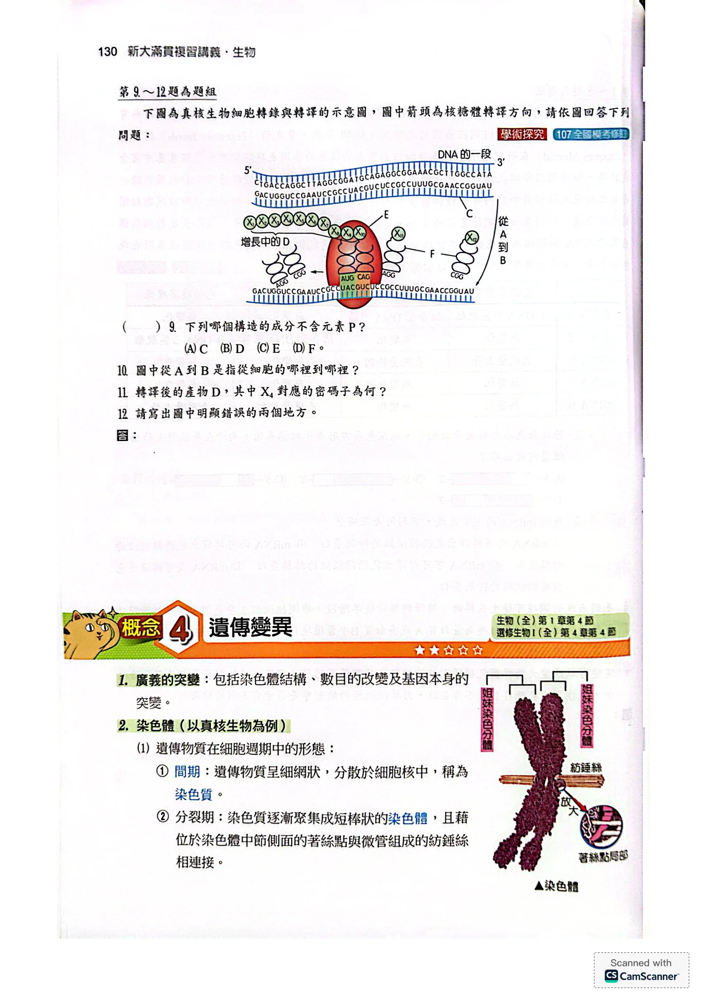
PDF第22頁／印刷第130頁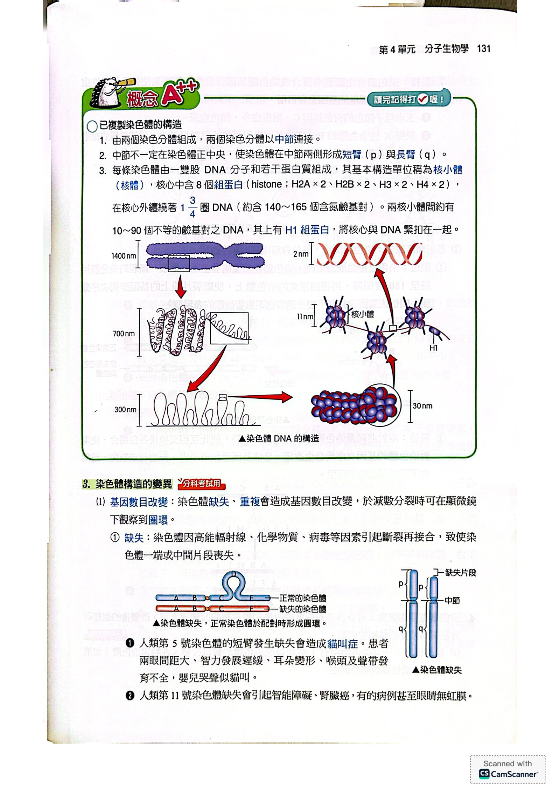
PDF第23頁／印刷第131頁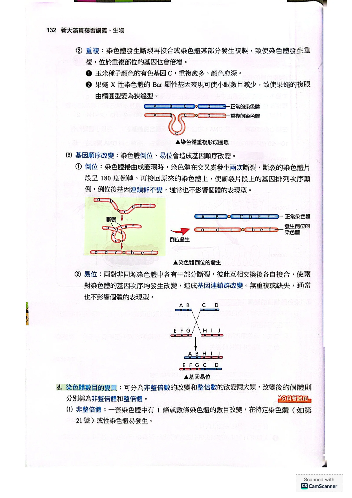
PDF第24頁／印刷第132頁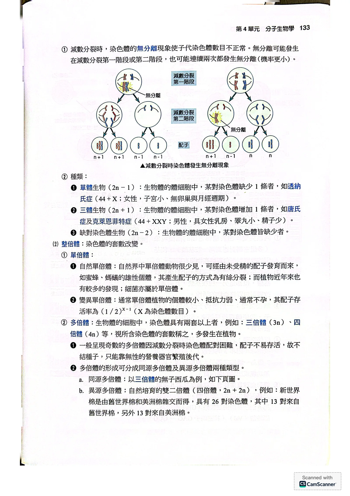
PDF第25頁／印刷第133頁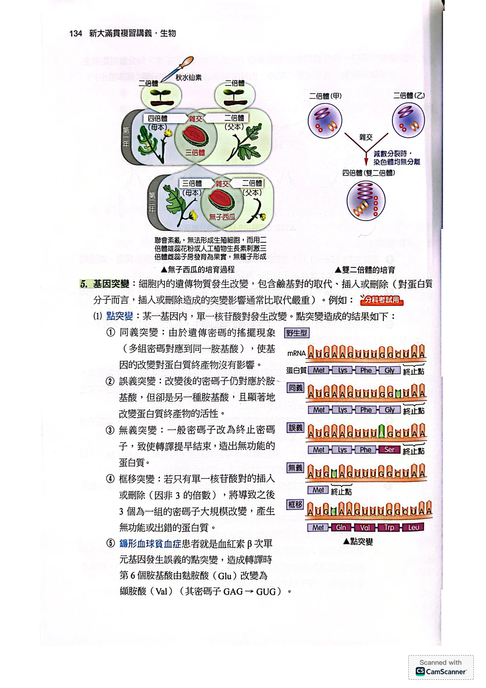
PDF第26頁／印刷第134頁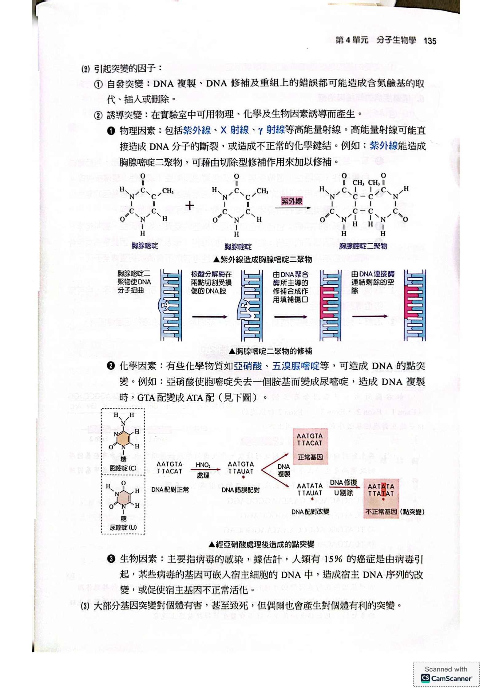
PDF第27頁／印刷第135頁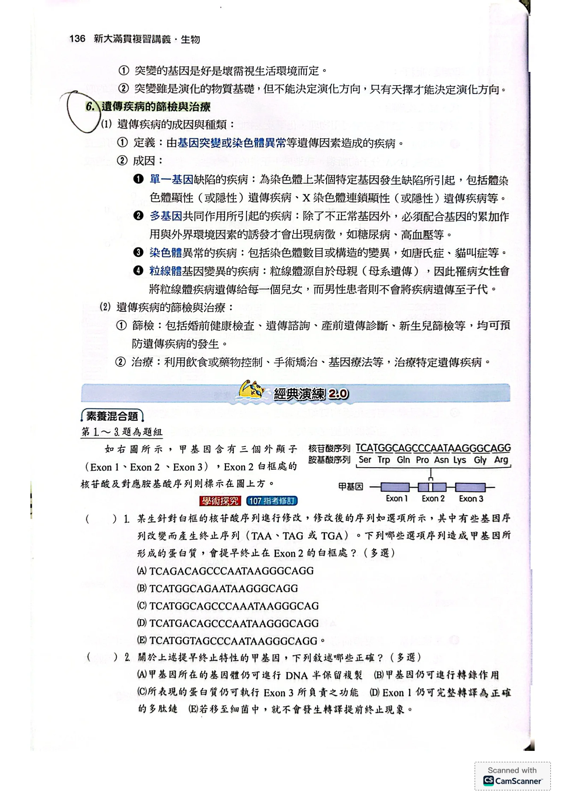
PDF第28頁／印刷第136頁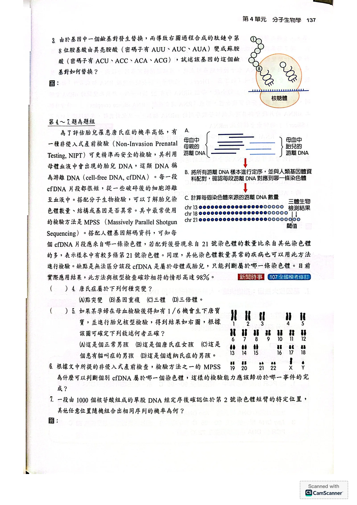
PDF第29頁／印刷第137頁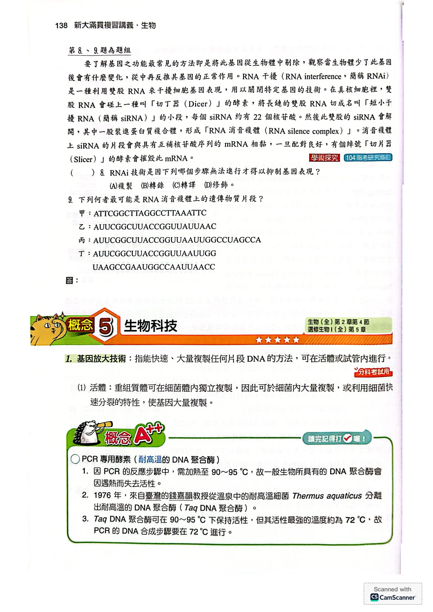
PDF第30頁／印刷第138頁